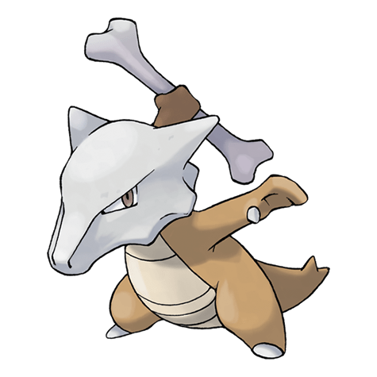

Назад
Маровак

Маровак — Покемон первого поколения под номером 105 в Покедекс. Обитает он в регионе Канто и относится к Земляному типу. Это последняя стадия эволюции Покемона Кьюбон. Маровак — это эволюционная форма Кьюбона. Он преодолел свою печаль из-за потери матери и вырос стойким и суровым Покемоном. Его закалённый дух тяжело сломить.
Тип:
Земляной
Эволюция
# 105 Маровак
Финальная стадия